内容要点
画倒影，有些人的画法是把东西复制一份、上下一翻。远处的山这么翻没问题，可近处站在石台上的人，一翻就不对了。封面是同一张吉田博《泰姬陵之朝雾》，A 是我把人直接翻进水里的，B 是原图：吉田博画的倒影从池沿才开始，没有脚，石台的顶面、长凳也都不
知识结构
画倒影，有些人的画法是把东西复制一份、上下一翻。远处的山这么翻没问题，可近处站在
画倒影，有些人的画法是把东西复制一份、上下一翻。远处的山这么翻没问题，可近处站在
画倒影，有些人的画法是把东西复制一份、上下一翻。远处的山这么翻没问题，可近处站在
- 画倒影，有些人的画法是把东西复制一份、上下一翻。远处的山这么翻没问题，可近处站在石台上的人，一翻就不对了。封面是同一张吉田博《泰姬陵之朝雾》，A 是我把人直接翻进水里的，B 是原图：吉田博画的倒影从池沿才开始，没有脚，石台的顶面、长凳也都不在水里。 道理是这样：把自己从站的地方往下降，降到水面下、和你离水面一样深的地方，从那儿往上看到的样子，倒过来就是倒影。这叫平面镜成像，商场亮的地砖上看得到桌子底下，也是这个道理。从那里往上看，脚被石台的边挡住了；那里看不到的，倒影里就没有。 顺着这个道理，我们可以看下其他的名画是怎么画的。东西的顶面水里照不出来：莫奈《青蛙塘》浮台的顶面、萨金特画的船舱里面，水里都没有。台子越高，倒影里少得越多：吉田博的石台高，脚没了；《红海龟》的沙洲矮，脚还在。离水边远的东西，要从它脚下翻：贝洛托画的楼退在岸坡后面，倒影的轴比岸边高一截。 远处的东西，可以先翻过来打底，再看水面和整张画。水面起了波，倒影可能被天色打断；画家也可能调整倒影的长短和位置。《记忆中的玛妮》里，两层窗在水中挨得更近；北斋画里的富士，倒影偏到了左边。物理能告诉我们水面会怎么反光，
画倒影，有些人的画法是把东西复制一份、上下一翻。远处的山这么翻没问题，可近处站在石台上的人，一翻就不对了。封面是同一张吉田博《泰姬陵之朝雾》，A 是我把人直接翻
1/11–4/11封面/要点：画倒影，有些人的画法是把东西复制一份
画倒影，有些人的画法是把东西复制一份、上下一翻。远处的山这么翻没问题，可近处站在石台上的人，一翻就不对了。封面是同一张吉田博《泰姬陵之朝雾》，A 是我把人直接翻进水里的，B 是原图：吉田博画的倒影从池沿才开始，没有脚，石台的顶面、长凳也都不在水里。 道理是这样：把自己从站的地方往下降，降到水面下、和你离水面一样深的地方，从那儿往上看到的样子，倒过来就是倒影。这叫平面镜成像，商场亮的地砖上看得到桌子底下，也是这个道理。从那里往上看，脚被石台的边挡住了；那里看不到的，倒影里就没有。 顺着这个道理，我们可以看下其他的名画是怎么画的。东西的顶面水里照不出来：莫奈《青蛙塘》浮台的顶面、萨金特画的船舱里面，水里都没有。台子越高，倒影里少得越多：吉田博的石台高，脚没了；《红海龟》的沙洲矮，脚还在。离水边远的东西，要从它脚下翻：贝洛托画的楼退在岸坡后面，倒影的轴比岸边高一截。 远处的东西，可以先翻过来打底，再看水面和整张画。水面起了波，倒影可能被天色打断；画家也可能调整倒影的长短和位置。《记忆中的玛妮》里，两层窗在水中挨得更近；北斋画里的富士，倒影偏到了左边。物理能告诉我们水面会怎么反光，
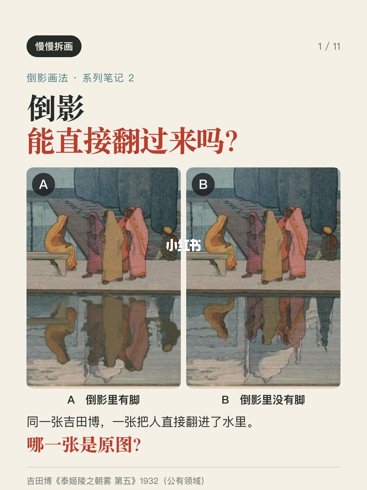
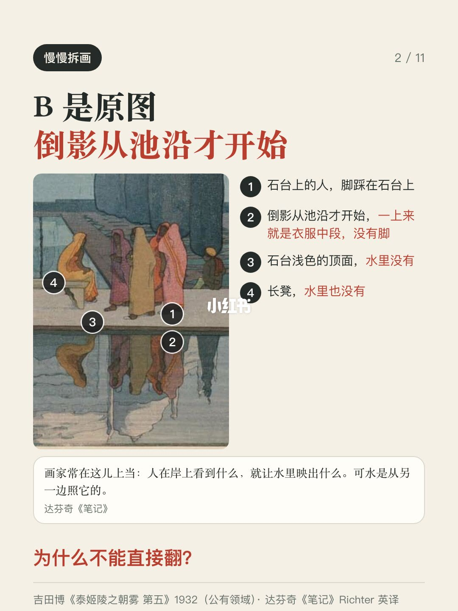
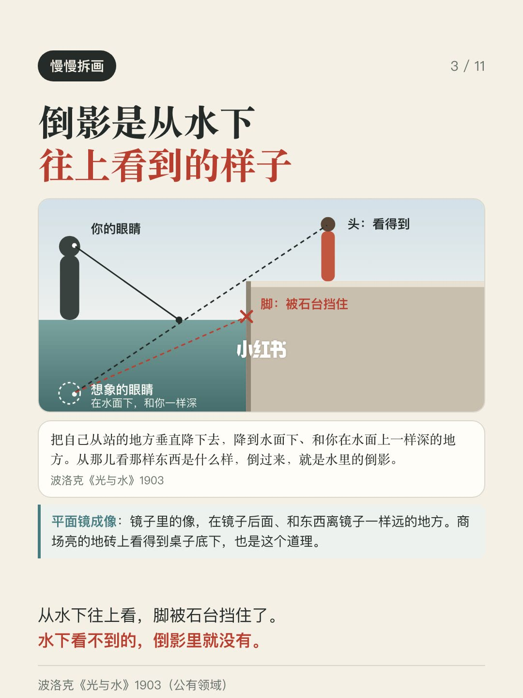
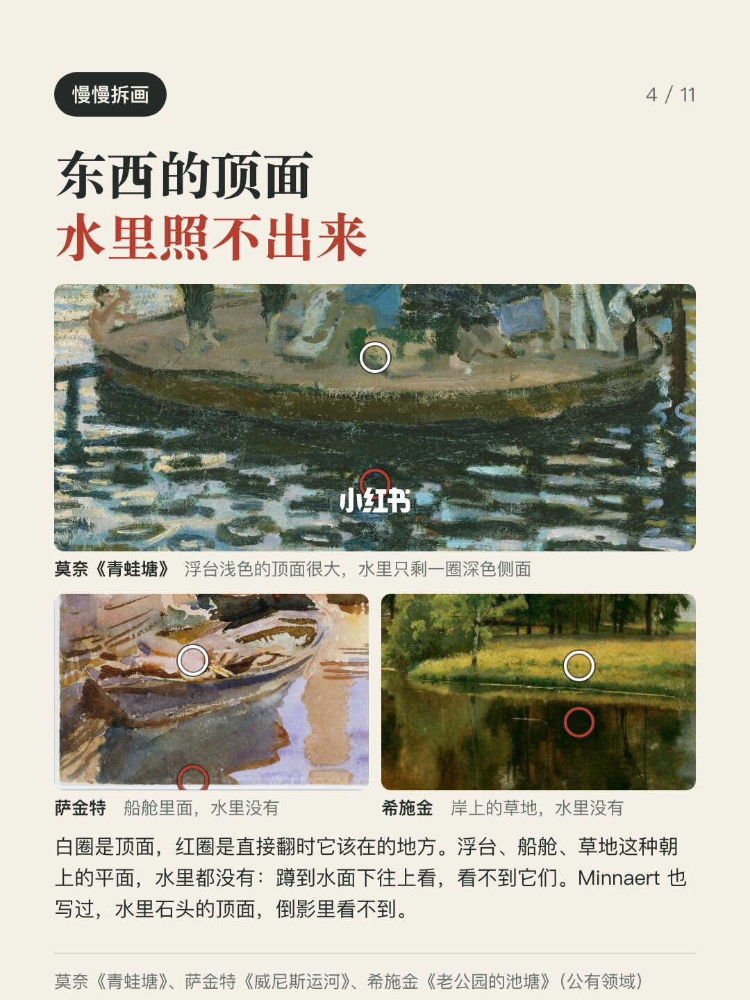
5/11–8/11第5/11页：怎么画倒影2｜看看吉田博和莫奈怎么
画倒影，有些人的画法是把东西复制一份、上下一翻。远处的山这么翻没问题，可近处站在石台上的人，一翻就不对了。封面是同一张吉田博《泰姬陵之朝雾》，A 是我把人直接翻进水里的，B 是原图：吉田博画的倒影从池沿才开始，没有脚，石台的顶面、长凳也都不在水里。 道理是这样：把自己从站的地方往下降，降到水面下、和你离水面一样深的地方，从那儿往上看到的样子，倒过来就是倒影。这叫平面镜成像，商场亮的地砖上看得到桌子底下，也是这个道理。从那里往上看，脚被石台的边挡住了；那里看不到的，倒影里就没有。 顺着这个道理，我们可以看下其他的名画是怎么画的。东西的顶面水里照不出来：莫奈《青蛙塘》浮台的顶面、萨金特画的船舱里面，水里都没有。台子越高，倒影里少得越多：吉田博的石台高，脚没了；《红海龟》的沙洲矮，脚还在。离水边远的东西，要从它脚下翻：贝洛托画的楼退在岸坡后面，倒影的轴比岸边高一截。 远处的东西，可以先翻过来打底，再看水面和整张画。水面起了波，倒影可能被天色打断；画家也可能调整倒影的长短和位置。《记忆中的玛妮》里，两层窗在水中挨得更近；北斋画里的富士，倒影偏到了左边。物理能告诉我们水面会怎么反光，
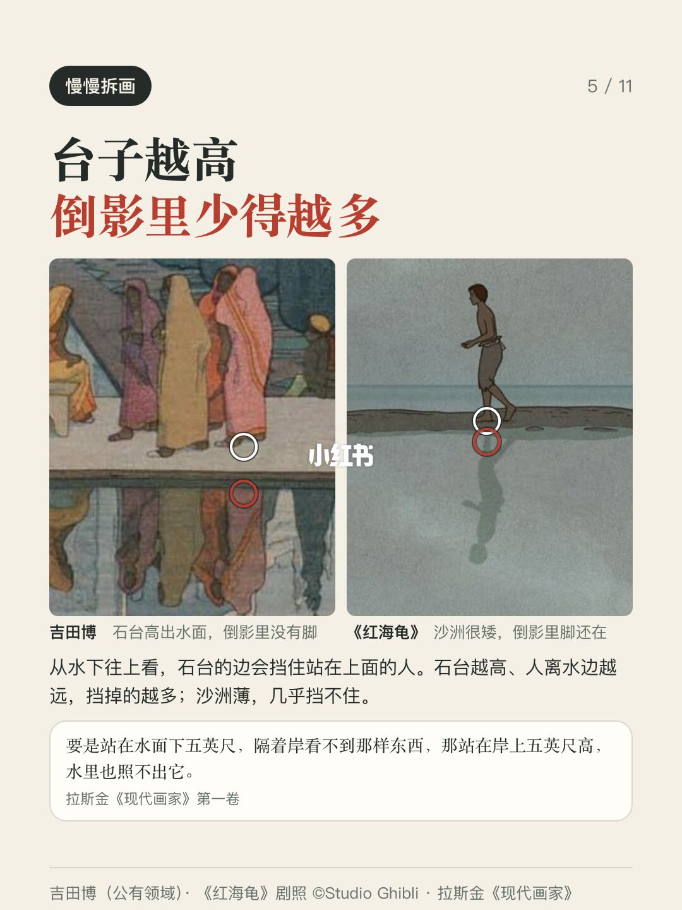
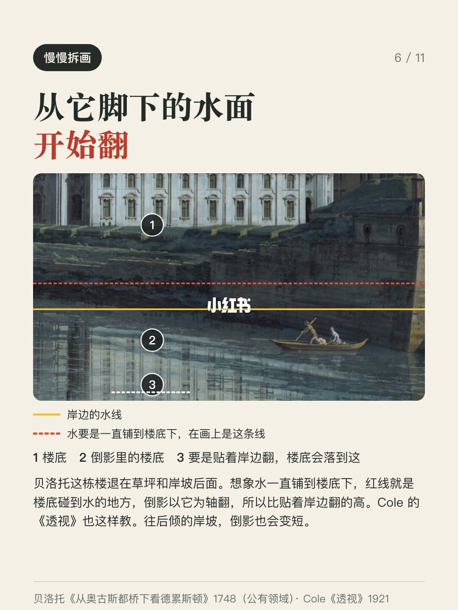
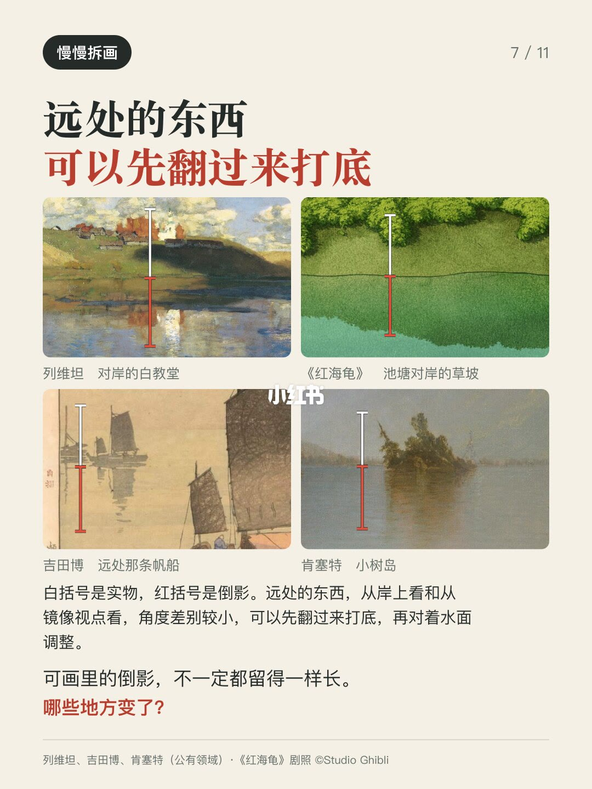
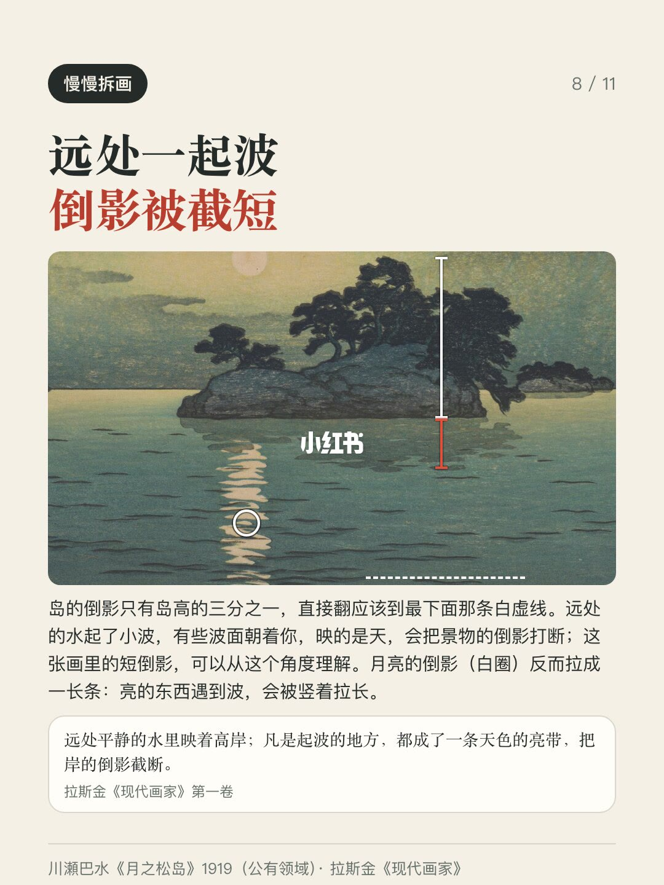
9/11–11/11第9/11页：怎么画倒影2｜看看吉田博和莫奈怎么
画倒影，有些人的画法是把东西复制一份、上下一翻。远处的山这么翻没问题，可近处站在石台上的人，一翻就不对了。封面是同一张吉田博《泰姬陵之朝雾》，A 是我把人直接翻进水里的，B 是原图：吉田博画的倒影从池沿才开始，没有脚，石台的顶面、长凳也都不在水里。 道理是这样：把自己从站的地方往下降，降到水面下、和你离水面一样深的地方，从那儿往上看到的样子，倒过来就是倒影。这叫平面镜成像，商场亮的地砖上看得到桌子底下，也是这个道理。从那里往上看，脚被石台的边挡住了；那里看不到的，倒影里就没有。 顺着这个道理，我们可以看下其他的名画是怎么画的。东西的顶面水里照不出来：莫奈《青蛙塘》浮台的顶面、萨金特画的船舱里面，水里都没有。台子越高，倒影里少得越多：吉田博的石台高，脚没了；《红海龟》的沙洲矮，脚还在。离水边远的东西，要从它脚下翻：贝洛托画的楼退在岸坡后面，倒影的轴比岸边高一截。 远处的东西，可以先翻过来打底，再看水面和整张画。水面起了波，倒影可能被天色打断；画家也可能调整倒影的长短和位置。《记忆中的玛妮》里，两层窗在水中挨得更近；北斋画里的富士，倒影偏到了左边。物理能告诉我们水面会怎么反光，
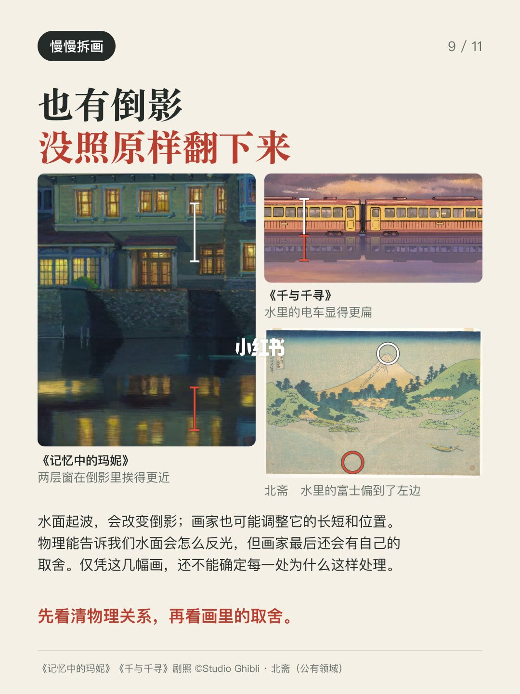
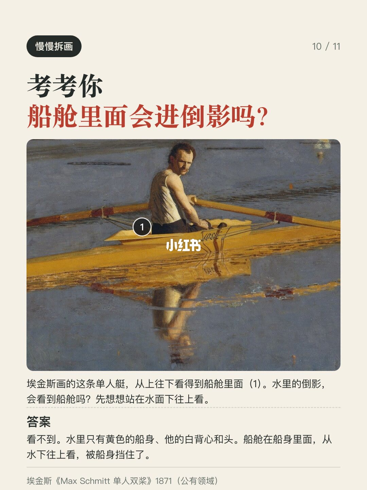
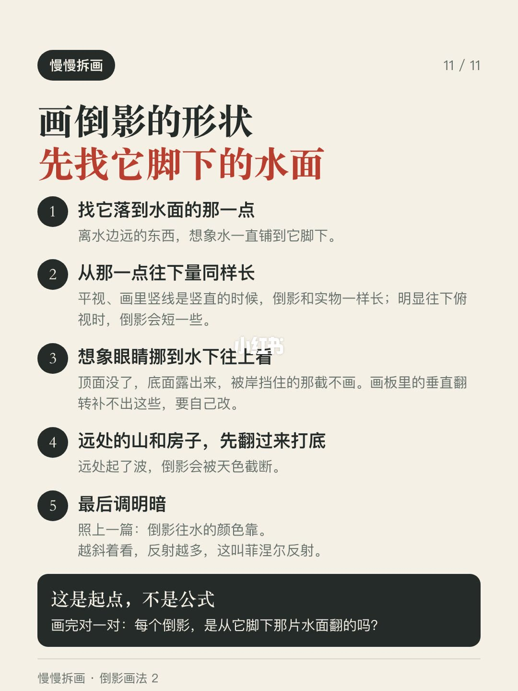
口述/画面要点（11段）
结合 Whisper medium 与画面大字整理；专有名词已校对。
封面/要点：画倒影，有些人的画法是把东西复制一份、上下一翻。远处的山这么翻没问题，可近处站在
第2/11页：怎么画倒影2｜看看吉田博和莫奈怎么画
第3/11页：怎么画倒影2｜看看吉田博和莫奈怎么画
第4/11页：怎么画倒影2｜看看吉田博和莫奈怎么画
第5/11页：怎么画倒影2｜看看吉田博和莫奈怎么画
第6/11页：怎么画倒影2｜看看吉田博和莫奈怎么画
第7/11页：怎么画倒影2｜看看吉田博和莫奈怎么画
第8/11页：怎么画倒影2｜看看吉田博和莫奈怎么画
第9/11页：怎么画倒影2｜看看吉田博和莫奈怎么画
第10/11页：怎么画倒影2｜看看吉田博和莫奈怎么画
第11/11页：怎么画倒影2｜看看吉田博和莫奈怎么画